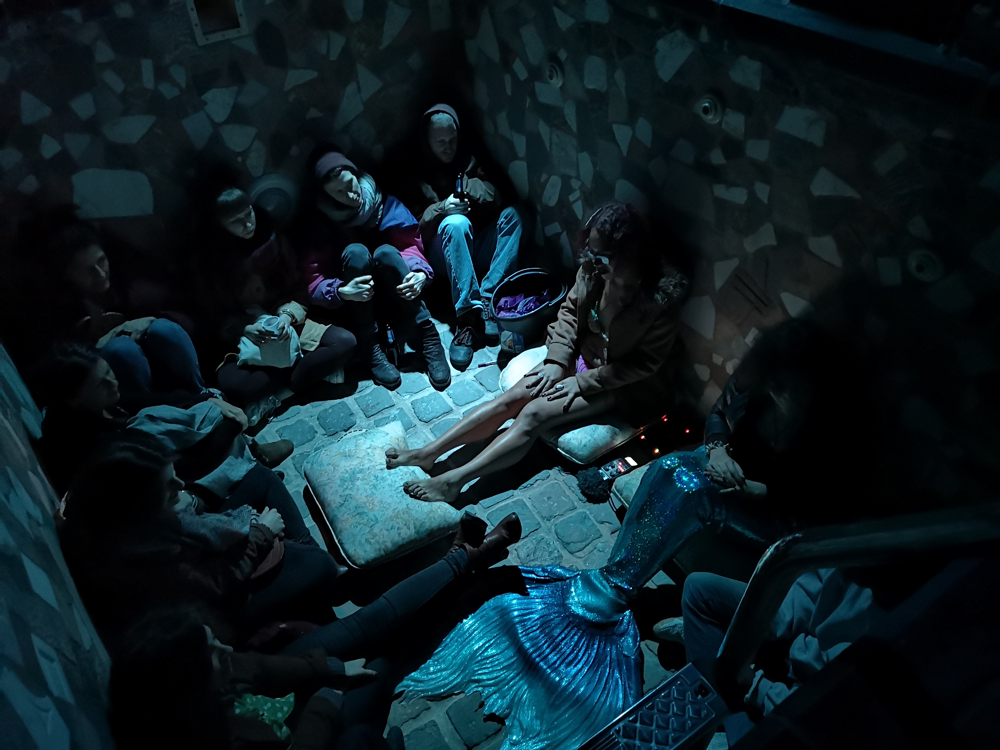

(OUT)PLACES (IN)SPACES
Vernissage: Friday, March 29, 2019 / 19h-22h
Exposition: March 30-31, 2019 / 15-18h
Curated by Célestine à Gallipoli

Since January and for the following months, Célestine à Gallipoli has invited three artists for a two-month stay at the Hectolitre space. First a residence and then an exhibition, the project presents itself as an ecosystem in movement, through several mediums, where artworks will reveal the common, fragile and ephemeral rhythms and trajectories that unite the neighbourhood of the Marolles. The project constructs itself through the multitude of animate and inanimate presences that cohabit this quarter of the city and the history of the building itself. For the occasion three different artists has been invited: Simone Basani (IT) in collaboration with curator Alice Ciresola (IT), Claude Cattelain (BE) and Anna Raimondo (IT/BE) who invited for a special project the artist Lia Garcia (ME). The flea market of the Jeu de Balle and its essence, as a space where objects and memories are recycled, recovered and re-appropriated and transformed will be used as an inspiration tool in particular by the artist Claude Cattelain, who will create a dialogue between the building of the Hectolitre, the area and their histories. Bodies and relics will be transformed as if they have been” fused” by the action of time, or the fire of passion. Anna Raimondo’s research and participative project is questioning the presence and experience of Brussels’ inhabitants from a gender perspective. For this occasion she has been interviewing different women, collecting their experiences and their perceptions of the neighbourhood of the Marolles. The project called “Nouvelles frontière du bien-être de l’écosystème vaginale”, which will move afterward in other spaces in Brussels, aims to create a gender and feminist map of Brussels. In the framework of her residency she has also invited the artist Lia Garcia for a specific project on gender and transsexuality and the figure of the mermaid. Simone Basani, with the curatorial support of Alice Ciresola, will present a new site-specific performance titled the “House we Have Built”, about images and sounds of violence and how violence is transmitted within families. The performance digs into the archeology of violence, into those heavy words still booming within the rooms of houses and into those traumatic remains through which people experience the world. The final exhibition will be an ensemble of voices, which will show different responses to the energies of this neighbourhood and this building and the manner in which they have affected the artists. The different histories and point of views that compose the space will invite us to rediscover and traverse the surroundings under a different point of view. - Claude Cattelain is a belgian artist, born in 1972 in Kinshasa, lives and works between Valencienne (FR) and Brussels. Claude Cattelain is a video artist, performer, drawer, installation designer and photographer. Most of the time, the artist is inspired and confronts the place that welcomes him. Using singular, raw or recovered materials, he offers the viewer experiences filmed, performed or using various media. Anna Raimondo is an Italian artist, born in Naples (IT) in 1981. She lives in Brussels and work internationally. Anna Raimondo’s work is a medium for encounters and exchanges. It can be defined as a journey into the social diversity while creating possible areas of interaction. Simone Basani and Alice Ciresola are Italian and born in 1989. and in 1990. They work together as an artist and curator duo since 2016, developing participatory projects, collective performances and educational devices for communities and cultural institutions. Together they research on the boundaries between public and museum spaces, particularly focusing on the role of marginal voices in collective processes of remembrance and forgetting. - Photo credits: Catherine Xu